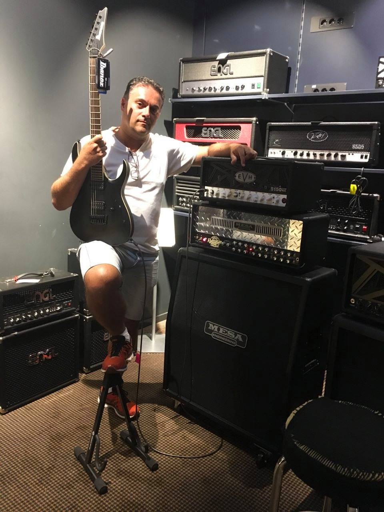
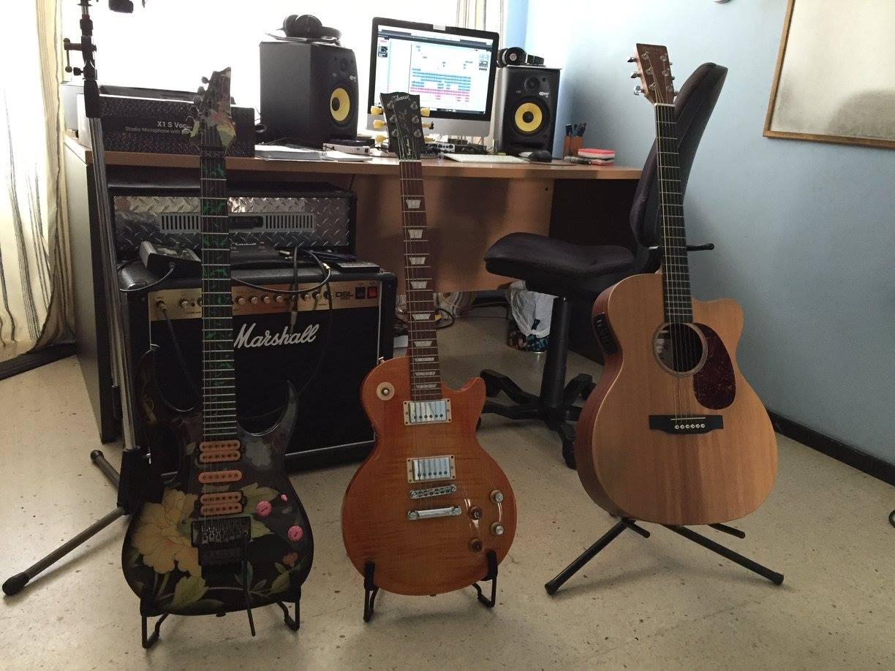
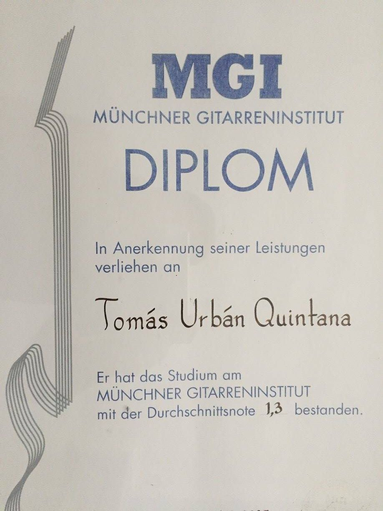

Tomás Urbán Quintana
Guitarrista titulado en Alemania por el Munich Guitar Institute
Títulos
- Estudios de guitarra eléctrica en la especialidad de rock/metal con nota final de sobresaliente
- Amplia experiencia en directo, estudio y como docente
- Con Certificado de Aptitud Pedagógica expewdido por la Universidad Alfonso X El Sabio
Demostraciones
Servicios
Imparto clases de guitarra eléctrica, acústica, española, bajo eléctrico e informática musical. Te puedo preparar para que puedas acceder a escuelas de música en cualquier parte del mundo (Inglaterra, Alemania, etc.) Las asignaturas impartidas son: Estilos (Rock, Blues, Pop, Funk, Fusion, Latin Jazz...) Improvisación, Armonía, Técnica (Vibrato, Bending, Legato, Alternate Picking, Sweep/Economy Picking, Tapping, String Skipping, Hybrid Picking, Finger Picking, Apoyando, Slap), Arrangement, Songwriting, Rítmica incluso lectura. Como asignaturas optativas Educación del oido (muy recomendable) y solfeo/lectura a 1ª vista. Te ayudo a aprender tus canciones favoritas. Tu pidelas.
Dispongo de estudio propio con material profesional para la grabación de guitarras.
Ofrezco también ayuda/asesoramiento profesional a la hora de componer/arreglar y/o grabar tus temas.
  